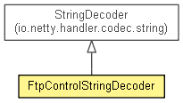

- Detail:
- Field |
- Constr |
- Method

- java.lang.Object
-
- io.netty.channel.ChannelHandlerAdapter
-
- io.netty.channel.ChannelInboundHandlerAdapter
-
- io.netty.handler.codec.MessageToMessageDecoder<io.netty.buffer.ByteBuf>
-
- io.netty.handler.codec.string.StringDecoder
-
- org.waarp.ftp.core.control.FtpControlStringDecoder
-
-
Nested Class Summary
-
Nested classes/interfaces inherited from interface io.netty.channel.ChannelHandler
io.netty.channel.ChannelHandler.Sharable
-
Method Summary
-
Methods inherited from class io.netty.handler.codec.string.StringDecoder
decode
-
Methods inherited from class io.netty.handler.codec.MessageToMessageDecoder
acceptInboundMessage, channelRead
-
Methods inherited from class io.netty.channel.ChannelInboundHandlerAdapter
channelActive, channelInactive, channelReadComplete, channelRegistered, channelUnregistered, channelWritabilityChanged, exceptionCaught, userEventTriggered
-
Methods inherited from class io.netty.channel.ChannelHandlerAdapter
handlerAdded, handlerRemoved, isSharable
-
Methods inherited from class java.lang.Object
clone, equals, finalize, getClass, hashCode, notify, notifyAll, toString, wait, wait, wait
-
Methods inherited from interface io.netty.channel.ChannelHandler
handlerAdded, handlerRemoved
- Detail:
- Field |
- Constr |
- Method
Copyright © 2009–2015 Waarp. All rights reserved.